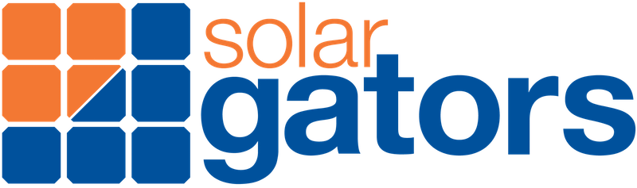

Every saved version is kept. Nothing here is ever overwritten.
It's gone for everyone, at any stage. A copy is kept under "Deleted evals" at the bottom of Evaluations, where it can be put back.
Your new version begins as a copy of the one you pick. The one you copy is not changed.
It starts as a draft that only you can see. It saves as you go.
Preview. This is the window members see when they start. Nothing is saved or sent.
Answer a few questions about your semester. Only you can see it until you submit it. It saves as you go.
New evals of this type use these settings. Evals already started keep theirs until you use “Apply to evals in progress”.
Every save is kept. Load an older one into the editor, then save it to make it current again.